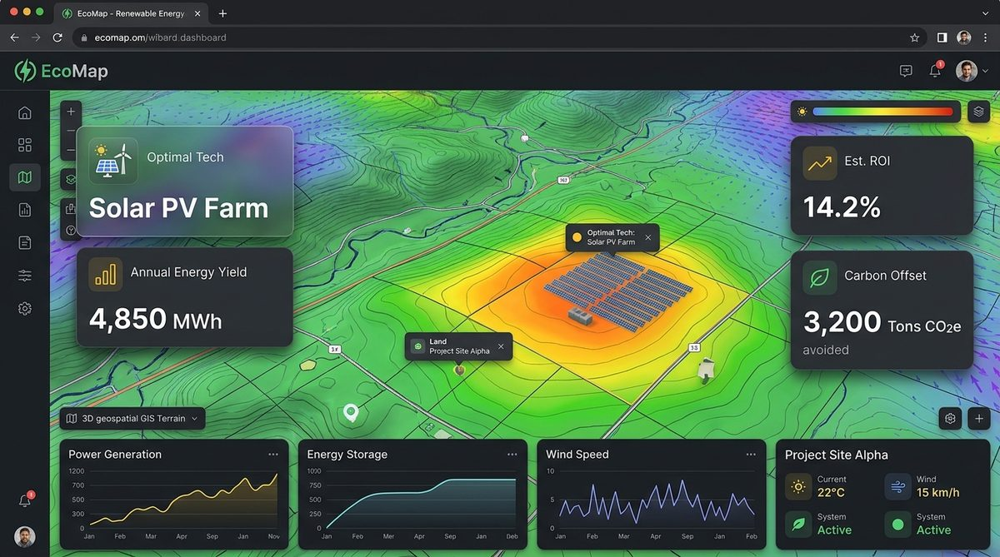
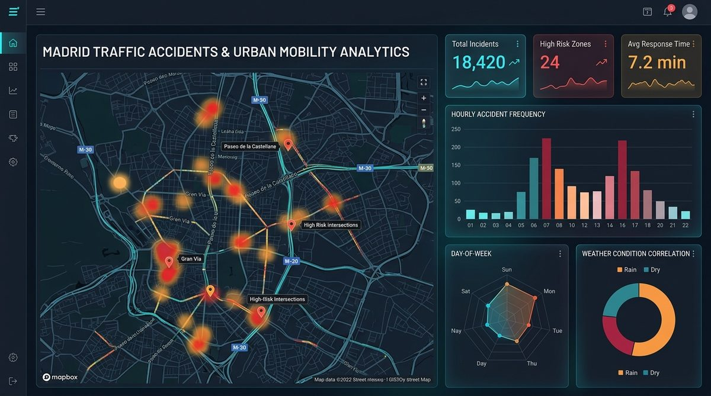
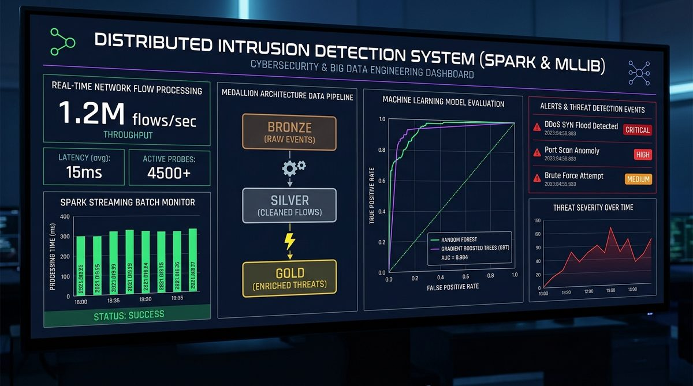

EcoMap: Plataforma Web de Energías Renovables

Diseño y desarrollo de una plataforma web que recomienda la tecnología energética óptima para cada terreno mediante modelos predictivos basados en datos geoespaciales y energéticos.
Estudiante de 5º año del Doble Grado en Ingeniería Matemática e Informática | ML Systems & LLMs
Me apasiona la convergencia entre el rigor matemático y la ingeniería de software escalable. Como estudiante de 5º año del Doble Grado en Ingeniería Matemática e Informática en la Universidad Europea, enfoco mi carrera hacia el rol de ML Systems Engineer, diseñando la arquitectura, optimización y puesta en producción de sistemas inteligentes.
Actualmente centro mi aprendizaje e interés en el ecosistema de Large Language Models (LLMs), explorando técnicas de adaptación eficiente como LoRA (Low-Rank Adaptation), cuantización y optimización de inferencia de alto rendimiento. Busco unir el modelado conceptual con pipelines de ingeniería robustos y reproducibles con impacto real en la industria.
| Centro | Titulación | Años |
|---|---|---|
| Universidad Europea | Doble Grado en Ingeniería Matemática e Ingeniería Informática | 2022 - 2027 |
| Nota: En curso (finalización prevista: Matemática 2026, Informática 2027). | ||

Diseño y desarrollo de una plataforma web que recomienda la tecnología energética óptima para cada terreno mediante modelos predictivos basados en datos geoespaciales y energéticos.

Extracción, limpieza y minería de datos abiertos de siniestros viales en Madrid para identificar patrones espaciales y temporales de riesgo mediante dashboards interactivos.

Diseño y evaluación empírica de un Sistema de Detección de Intrusiones (IDS) distribuido sobre Apache Spark para procesar más de 16 millones de flujos del dataset CSE-CIC-IDS 2018 mediante pipelines MLOps y modelos de Ensemble Learning.